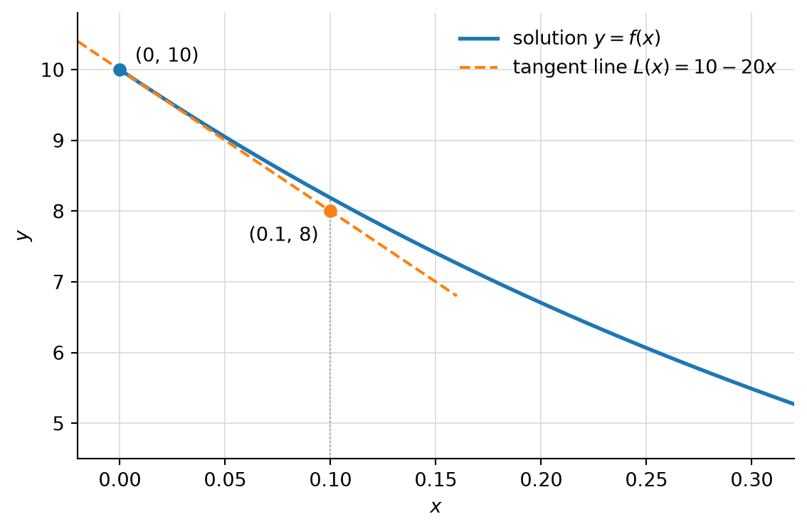

20 Activity: Linear Approximation and Euler’s Method
20.1 Background: Differential Equations
Consider the equation \[ \frac{dy}{dx} = -2y . \] This is an example of a differential equation. A solution of this differential equation is a function \(y = f(x)\) that makes the equation true, i.e. \(f'(x) = -2f(x)\) for all \(x\).
Notice that the equation does not tell us what \(f\) is. It tells us something more indirect: at any point \((x, y)\) on the graph of a solution, the slope of the tangent line is \(-2y\). If we know one point on the graph, that is exactly what we need to build a linear approximation there.
20.2 Step 1: A worked example
Suppose we want a solution \(y = f(x)\) with the initial data \(f(0) = 10\), and we wish to estimate \(f(0.1)\).
- Since we know \(f(0)\), we use the linear approximation about \(a = 0\): \[ L(x) = f(0) + f'(0)(x - 0). \]
- Use the initial data and the differential equation to compute \(f'(0)\). At \(x = 0\) we have \(y = f(0) = 10\), so \[ f'(0) = \left.\frac{dy}{dx}\right|_{x=0} = -2(10) = -20. \]
- Use \(f(0)\) and \(f'(0)\) to build the linear approximation about \(a = 0\): \[ L(x) = 10 - 20x. \]
- Use it to estimate \(f(0.1)\): \[ f(0.1) \approx L(0.1) = 10 - 20(0.1) = 8. \]
We now know \(f(0) = 10\) and (approximately) \(f(0.1) = 8\). Nothing stops us from repeating the process: use the differential equation to get the slope at \(x = 0.1\), build the linear approximation about \(a = 0.1\), and use it to estimate \(f(0.2)\). And so on. This method of solving a differential equation numerically, one small tangent-line step at a time, is called Euler’s method.
20.3 Step 2: Exponential growth
Let \(N(t)\) denote the mass of a population of bacteria, in milligrams (mg), at time \(t\) (in days). Assume that the per capita growth rate is \(10\%\) per day: \[ \frac{1}{N}\frac{dN}{dt} = 0.1, \qquad\text{or}\qquad \frac{dN}{dt} = 0.1\,N. \] Suppose we observe that at time \(t = 10\) days the mass of the population is \(300\) mg, so that \(N(10) = 300\).
20.4 Step 3: Logistic growth
Let \(N(t)\) again denote the mass of a population of bacteria, in mg, at time \(t\) (in days). This time the population is modeled by a logistic growth model \[ \frac{dN}{dt} = \frac{1}{2}\,N\left(1 - \frac{N}{1000}\right). \] Suppose we observe that at time \(t = 20\) days the mass of the population is \(500\) mg, so that \(N(20) = 500\).
20.5 Step 4: Pollution in a lake
Let \(P(t)\) denote the amount of phosphorus pollution in a lake, in tons, \(t\) months after monitoring has begun. Assume that the amount of pollution is modeled by the differential equation \[ \frac{dP}{dt} = 20 - \frac{1}{5}\,P . \] This says that pollution flows into the lake at a constant rate of \(20\) tons per month and flows out at a rate proportional to the current amount \(P\), with proportionality constant \(\tfrac15\), i.e. \(20\%\) per month. Suppose we observe that at time \(t = 3\) months the amount of phosphorus pollution is \(40\) tons, so that \(P(3) = 40\).
20.6 Over or under?
In each of the three models, you can decide whether your estimate is too high or too low without knowing a formula for the solution, just by reading the differential equation.